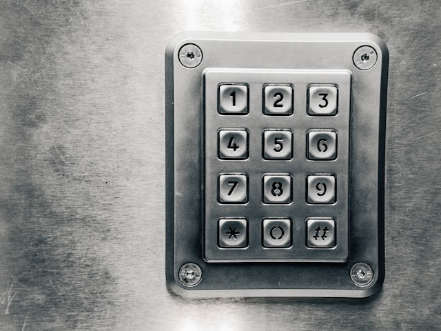
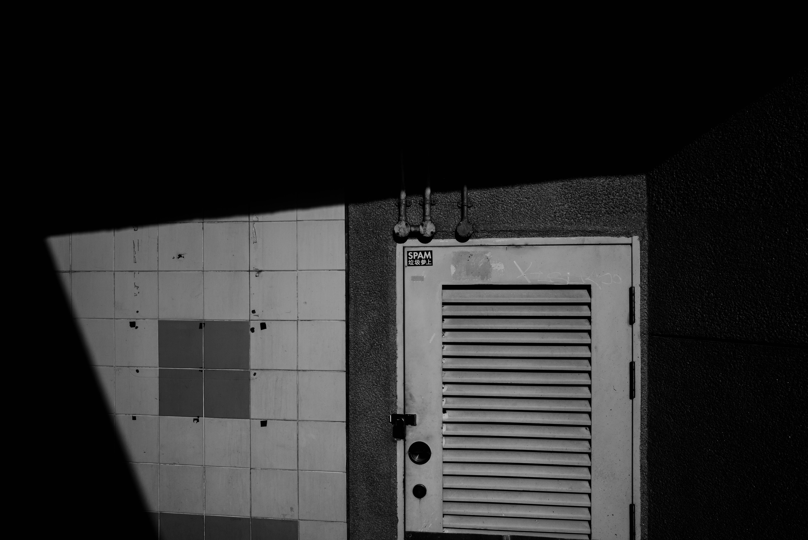
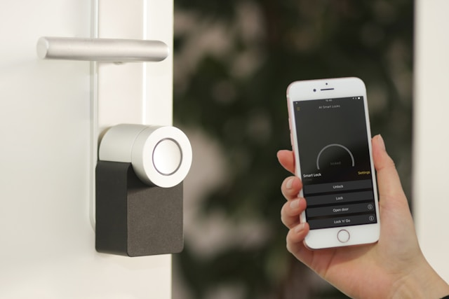
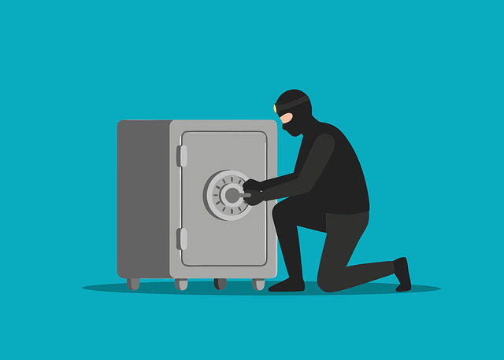
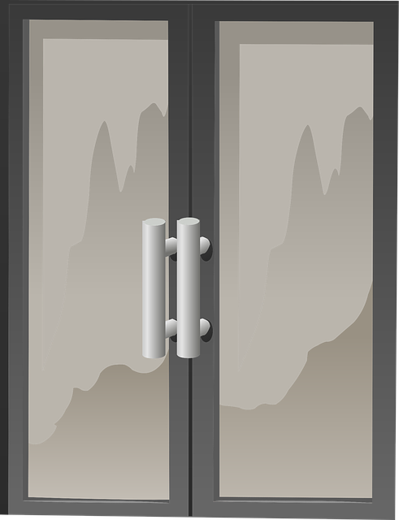
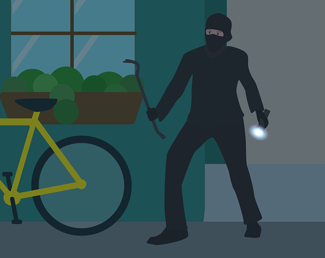
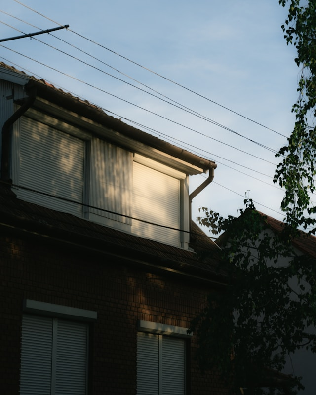
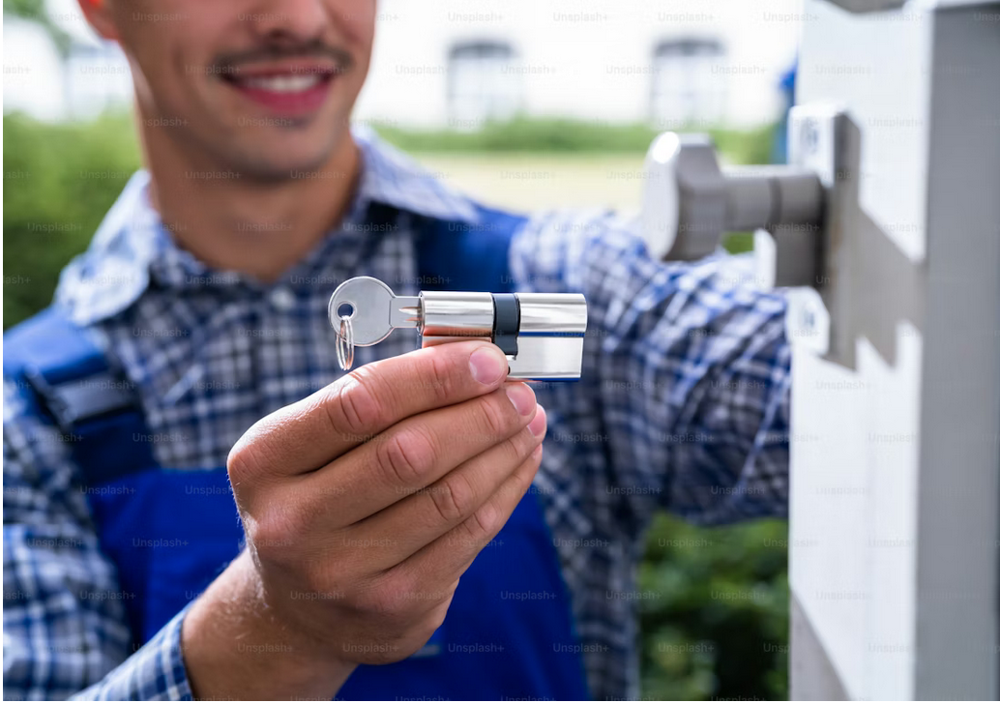

Porte claquée : que faire ? Guide complet et prix
Guide étape par étape : quand appeler un serrurier, prix jour/nuit, erreurs à éviter absolument.
Clé cassée dans la serrure : causes, solutions et prix
Extraction, remplacement cylindre, prévention. Tout pour résoudre une clé cassée rapidement.

Serrure bloquée, porte fermée : diagnostic et solutions
Diagnostic du type de blocage, solutions temporaires, quand appeler un serrurier professionnel.
Vitrier Paris 15ᵉ 24/7 : Dépannage & Tarifs 2026
Intervention rapide dans le 15ᵉ arrondissement. Tarifs transparents 2026, double vitrage, prise en
charge assurance.
Clé cassée dans la Serrure : Solutions Paris 2026
Votre clé est cassée ? Solutions d’extraction, prix, et comment éviter ce problème.
Porte claquée : intervention en 30 minutes
Porte claquée ? Nous intervenons rapidement partout à Paris et en Île-de-France. Ouverture sans
casse.

Serrure cassée : dépannage express 24h/24
Clé coincée ou serrure cassée ? Intervention immédiate pour sécuriser votre logement rapidement.

Sécurisation immédiate après effraction
Intervention d’urgence 24h/24 pour sécuriser votre domicile après un cambriolage. Prise en charge
assurance.
Vitrier en urgence : remplacement dans la journée
Vitre cassée ? Intervention rapide pour sécuriser et remplacer vos vitres. Prise en charge assurance.

Serrure 3 points vs 5 points : laquelle choisir ?
Comparatif complet : sécurité, prix, installation. Guide pour choisir la meilleure serrure
multipoints.
Comparatif
Les meilleures serrures du marché en 2025
Comparatif complet des meilleures marques : Fichet, Bricard, Vachette, Picard et JPM.
Arnaque serrurier Paris : 8 signes d’alerte et recours
Comment repérer un faux serrurier, vos droits, recours légaux. Checklist de vérification.

Assurance et serrurerie : que couvre votre contrat ?
Effraction, perte de clés, porte claquée : que rembourse votre assurance ? Plafonds et démarches.

Motorisation et domotique des volets roulants avec SOMFY
Motorisez vos volets roulants avec SOMFY : transformation manuel → automatique, commande murale,
télécommande…
Maintenance volets roulants : guide complet
Entretien, signes d’usure, fréquence recommandée : tout pour prolonger la vie de vos volets.

Les serrures connectées en 2025 : sécurité, avantages, prix et installation
Tout savoir sur les serrures intelligentes : Bluetooth, WiFi, prix, installation et comparatif des
meilleures marques.
Comment choisir la bonne serrure pour votre logement
Guide complet pour choisir entre serrure monopoint et multipoints selon vos besoins et votre budget.
Sécurisation des accès en copropriété : les solutions indispensables en 2025
Guide complet pour syndics : serrures A2P, cornières anti-pinces, cylindres haute sécurité et
blindage pour sécuriser...
Sécurisation des portes de cave en copropriété
Guide complet pour protéger les caves contre les cambriolages : solutions techniques, obligations
légales, coût...
Organigramme de clés : la solution pour simplifier la gestion d’immeuble
Passe général, sous-passe, clés protégées : comment un organigramme de clés sécurise et simplifie la
gestion de votre...

Comment réduire les effractions dans les halls d’immeuble
Techniques des cambrioleurs et solutions concrètes pour protéger le hall de votre copropriété :
serrures renforcées...

Copropriétés
Pourquoi externaliser la maintenance de serrurerie en copropriété ?
Contrat de maintenance : moins de pannes, économies réelles et décharge de responsabilité pour le
syndic. Avantages et...
Copropriétés
Serrures connectées en copropriété : bonne ou mauvaise idée ?
Analyse complète pour syndics : avantages réels, limites techniques et contraintes juridiques des
serrures intelligentes...
Serrure Connectée 2026 : Le Guide Complet
Tout savoir sur les serrures intelligentes : Matter/Thread, prix, installation et comparatif des
meilleures marques.

Porte blindée Paris : prix et installation A2P 2026
Prix par gamme A2P BP1/BP2/BP3, blindage vs porte blindée, marques et financement.
Porte blindée appartement Paris : prix et installation
Prix A2P BP1/BP2/BP3, démarches syndic, installation et économies assurance. Guide complet 2026.

Cambriolage Paris : les arrondissements les plus touchés
Statistiques par arrondissement, horaires à risque, méthodes et solutions de protection.
Sécurité
Porte Blindée Paris 2026 : Prix, Normes A2P & Installation
Guide complet porte blindée 2026 : certifications A2P BP1/BP2/BP3, prix actualisés, aides
financières.
Sécurité
Sécuriser sa Résidence Secondaire 2026
Alarme, caméras, serrures connectées, simulation présence : guide complet anti-cambriolage.
Porte blindée : avantages, prix et installation
Tout savoir sur les portes blindées : certifications A2P, prix, installation et aides des assurances.
Porte claquée : que faire ? Guide complet et prix
Guide étape par étape : quand appeler un serrurier, prix jour/nuit, erreurs à éviter absolument.
Clé cassée dans la serrure : causes, solutions et prix
Extraction, remplacement cylindre, prévention. Tout pour résoudre une clé cassée rapidement.
Dépannage
Serrure bloquée, porte fermée : diagnostic et solutions
Diagnostic du type de blocage, solutions temporaires, quand appeler un serrurier professionnel.
Comment ouvrir une porte claquée soi-même (sans casse)
Technique de la radio expliquée pas à pas. Quand ça marche, quand appeler un professionnel.
Dépannage
Volet roulant en panne : réparer ou remplacer ?
Diagnostic, coûts réparation vs remplacement. Moteur HS, tablier bloqué, condensateur.

Dépannage
Volet roulant électrique bloqué ou lent : causes et solutions
Causes courantes d’un volet roulant bloqué (moteur, condensateur, fins de course) et solutions
professionnelles.
Serrurier pas cher Paris : vrais prix et pièges à éviter
Comment trouver un serrurier pas cher ET fiable. Vrais tarifs 2026, 6 arnaques fréquentes.
Combien coûte un serrurier le dimanche, la nuit ou un férié ?
Majoration légales, tarifs nuit/week-end/férié détaillés. Comment payer moins cher.
Serrurier prix : combien coûte un dépannage en 2026 ?
Tous les prix serrurier 2026 détaillés : ouverture, cylindre, multipoints. Jour et nuit. Comment
éviter les arnaques.
Tarifs
Combien coûte un changement de cylindre de serrure ?
Prix cylindre standard vs haute sécurité A2P. Quand changer, quelle marque choisir.
Tarifs serrurerie 2026 : évolutions et conseils
Anticipez les prix 2026 : tendances, facteurs d'évolution et conseils pour économiser.
Tarifs
Les vrais tarifs de serrurerie en 2025
Prix réels des interventions jour et nuit, forfaits standards et comment éviter les arnaques.

Changer un cylindre de serrure soi-même : tuto complet
Tutoriel pas à pas, outils, mesures, prix par gamme. Quand faire appel à un pro.
Technique
Cylindre européen : comprendre son fonctionnement
Fonctionnement technique du cylindre européen, système de goupilles et protections anti-effraction.

Remplacer une vitre de fenêtre : prix détaillés 2026
Prix par type de vitrage, tarifs pose, assurance bris de glace. Guide complet.
Vitrerie
Vitrier Paris 15ᵉ 24/7 : Dépannage & Tarifs 2026
Intervention rapide dans le 15ᵉ arrondissement. Tarifs transparents 2026, double vitrage, prise en
charge assurance.
Vitrerie
Vitre cassée : vos droits et obligations avec l’assurance
Tout comprendre sur la garantie bris de glace, les démarches et les remboursements possibles.